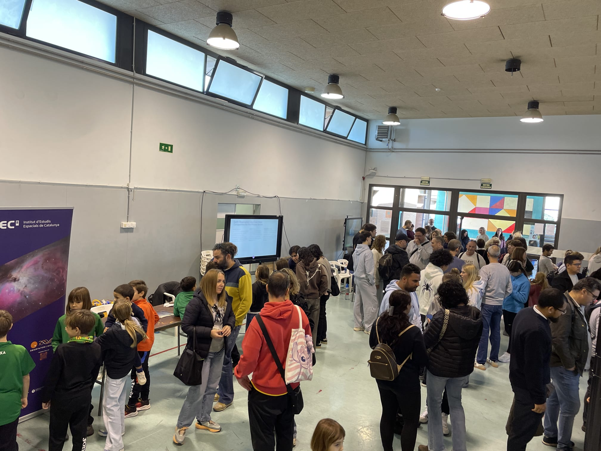
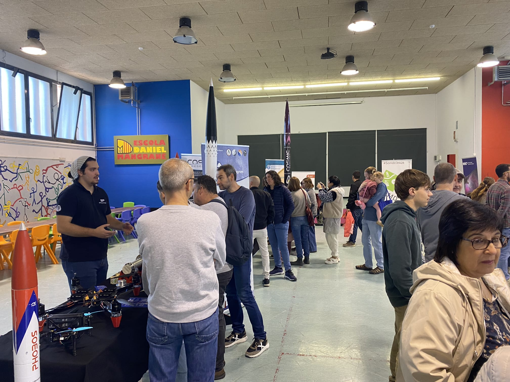
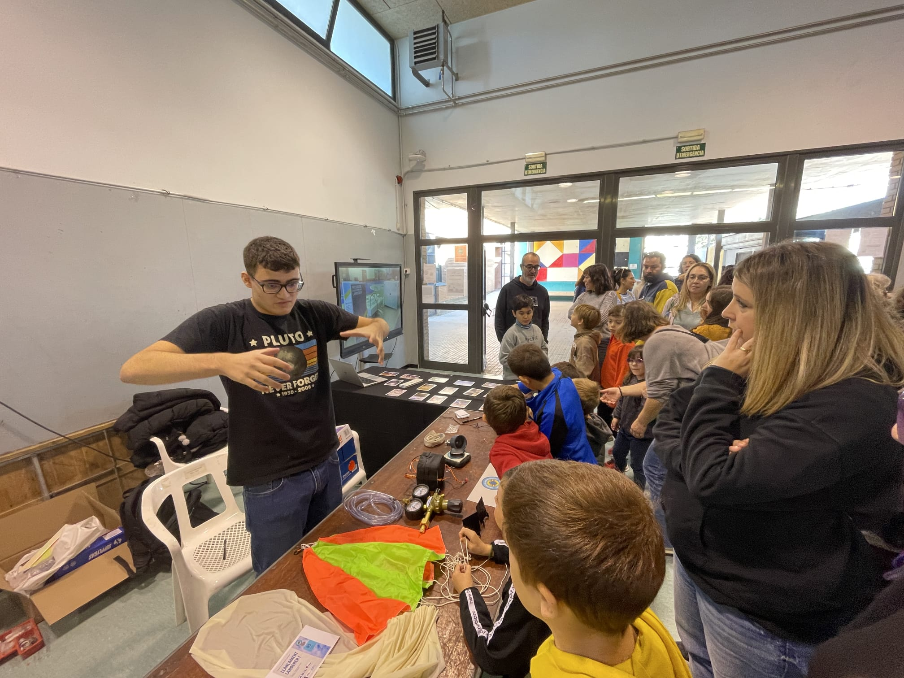
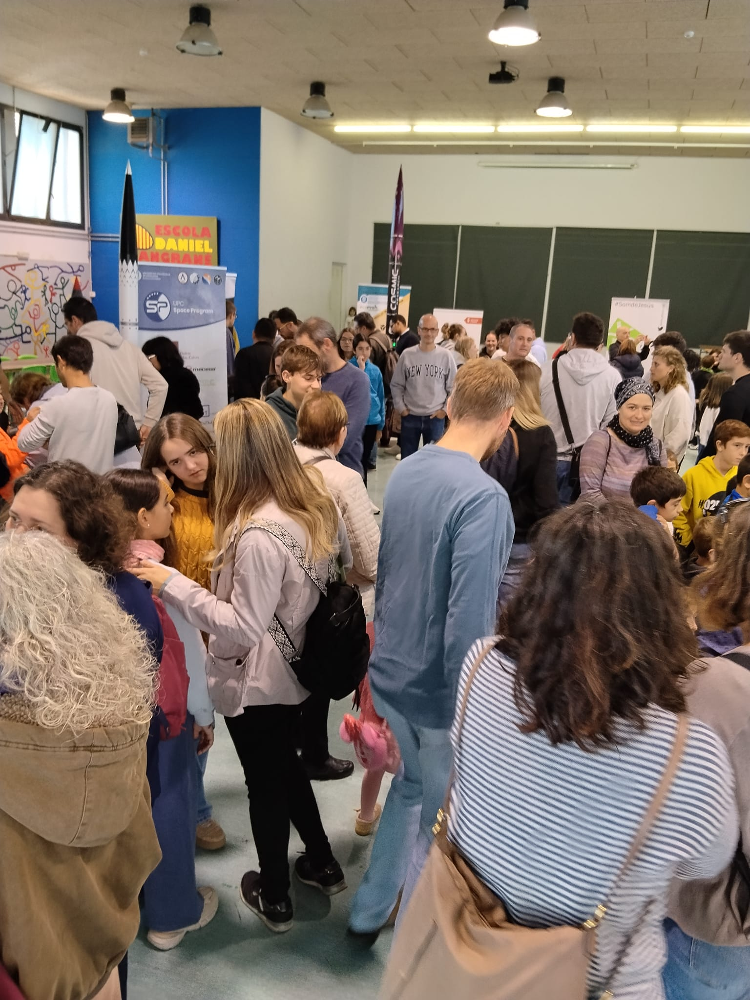
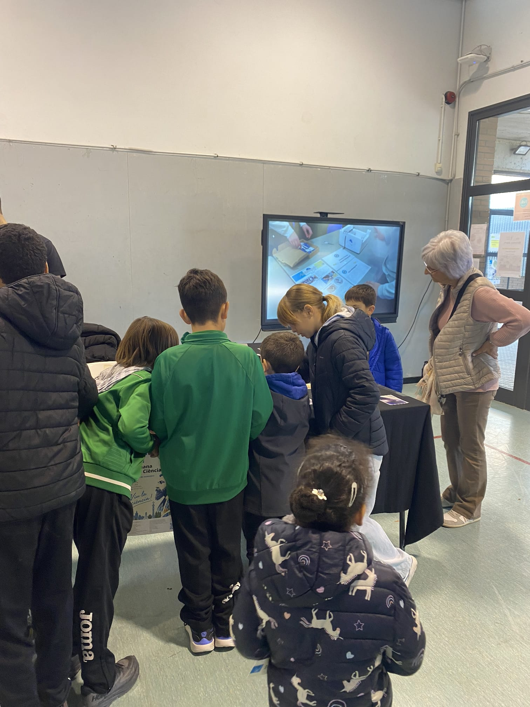
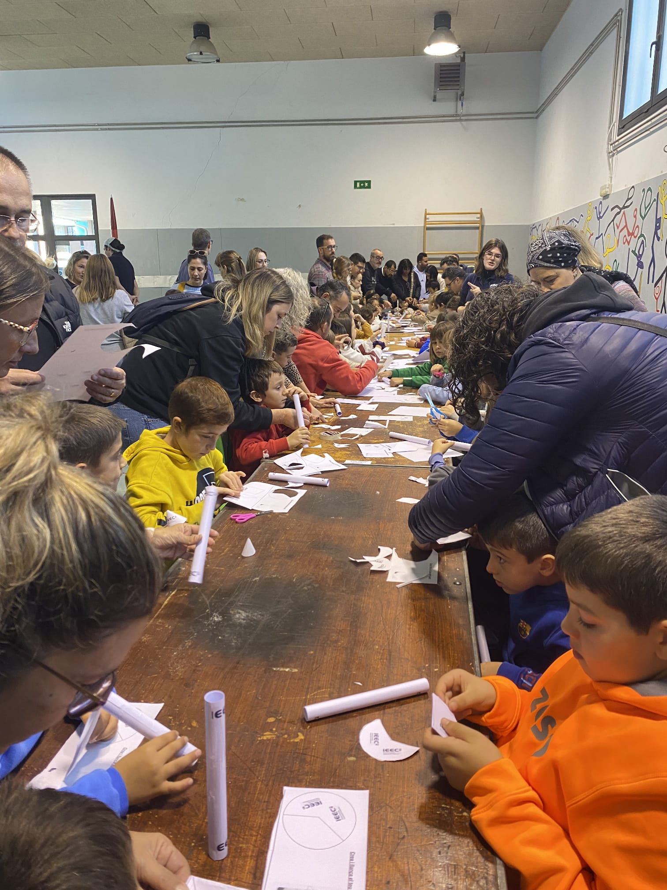
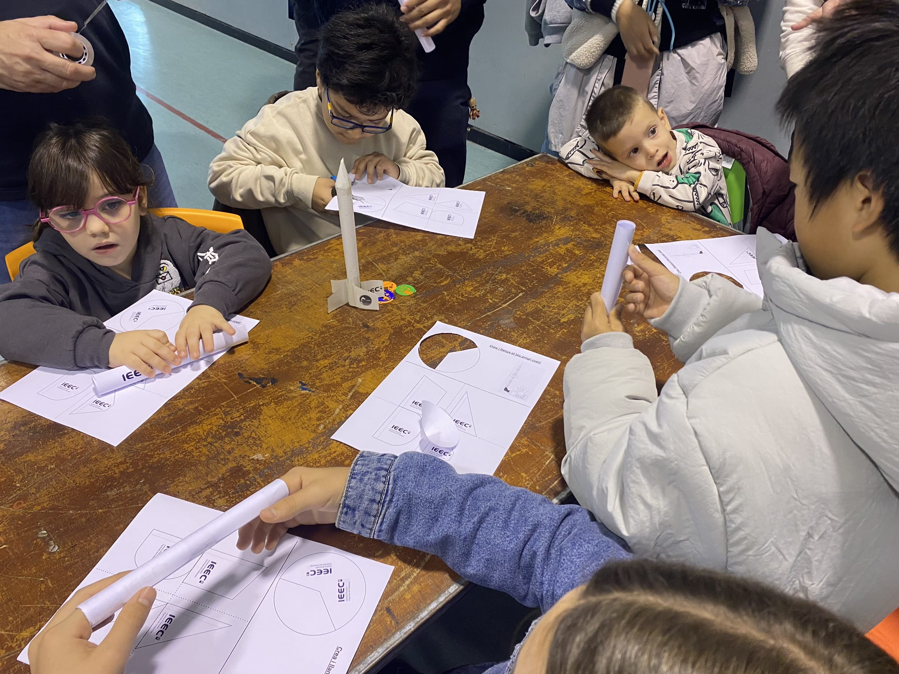
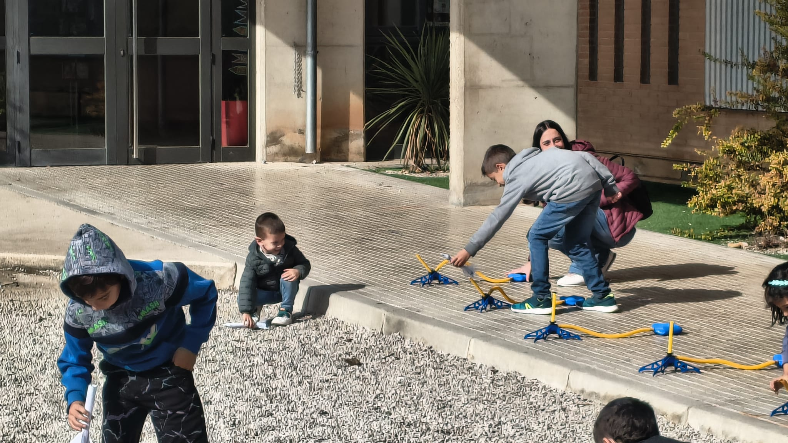

Un matí dedicat a la ciència, la tecnologia i l'exploració de l'espai, pensat per a totes les edats. Gràcies a tots els qui hi heu participat!
El 7 de novembre va arribar a Jesús la I Jornada de Divulgació Espacial de les Terres de l'Ebre: un matí dedicat a la ciència, la tecnologia i l'exploració de l'espai pensat per a totes les edats.
Durant la jornada es van poder gaudir exposicions de projectes reals, tecnologia espacial, experiments i activitats pràctiques per a tota la família. Gràcies a les entitats, als suports i a tots els assistents per fer-la possible!








L'assistència a l'acte va implicar l'acceptació de poder aparèixer en fotografies i enregistraments de vídeo destinats a la difusió de la jornada a mitjans d'ADECTE i d'altres canals autoritzats.